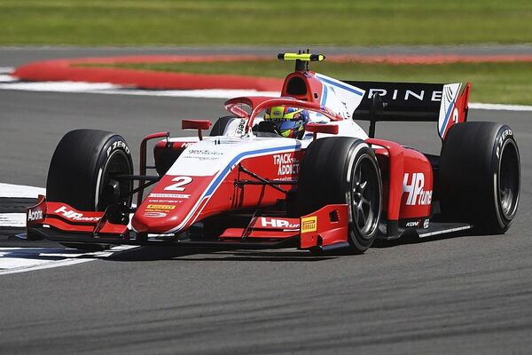
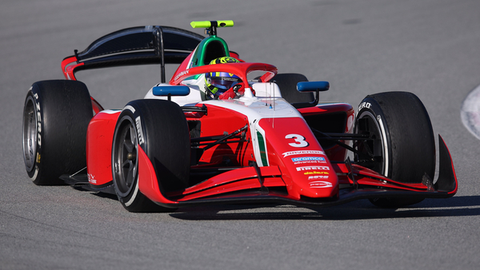

-Es una escudería de automovilismo italiana. La escudería se fundó en 1983.Es comúnmente considerada como la escudería de monoplazas más prestigiosa compitiendo en categorías promocionales de Fórmula 1.
-Actualmente la compite en la Fórmula 3 Europea (desde 2012), la Fórmula 3 Euroseries (desde 2014), la ADAC Fórmula 4 (desde 2015), el Campeonato de Fórmula 2 de la FIA (desde 2017), y Campeonato de Fórmula 3 de la FIA el (desde 2019) entre otras competiciones.
Unas de las mejoras temporadas fue en el año 2017 cuando se fundo la categoria,Prema fue segundo del mundo del mundial de contructores.Y en el mundial de pilotos Charles Leclrec fue campeón representando a Prema.
En la temporada 2020 y 2021 consigieron el titulo de mundial de constructores dos veces consecutivas.Lo mismo paso en el de pilotos en 2020 lo gano Mick Schumacher y en 2021 lo gano Oscar Piastri.
 